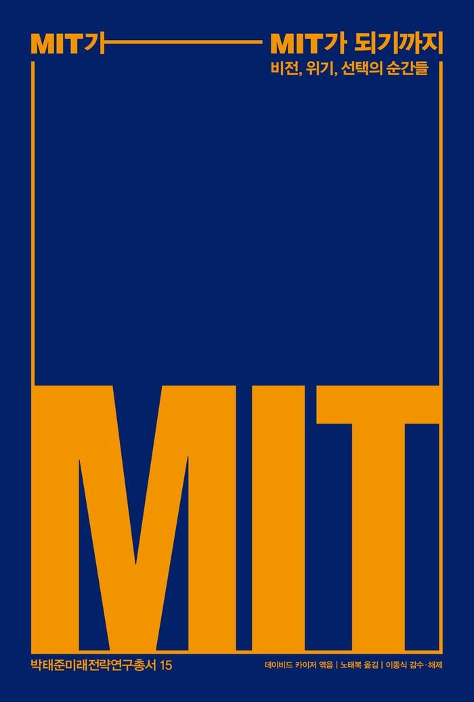

저자 데이비드 카이저 엮음, 노태복 옮김, 이종식 감수·해제출판사 빨간소금발간일 2026-04-23

책소개
지금의 MIT는 저절로 만들어지지 않았다 — MIT를 만든 결정적 순간들
오늘날 MIT는 과학기술의 성지로 불리지만, 그 과정은 결코 탄탄대로가 아니었다. 이 책은 설립자 윌리엄 바턴 로저스가 내건 ‘정신과 손(Mens et Manus)’이라는 실용적 교육 철학이 어떻게 대학의 뿌리가 되었는지, 그리고 하버드대학교에 흡수 통합될 뻔한 절체절명의 위기를 어떻게 극복했는지를 생생하게 그려낸다.
특히 제2차 세계대전과 냉전이라는 거대한 파도 속에서 MIT가 수행한 역할에 주목한다. 레이더 개발과 같은 국가적 프로젝트를 거치며 거대 연구 기관으로 변모하는 과정, 그 안에서 발생한 학부 교육의 소홀함과 군사 연구에 대한 윤리적 고뇌 등 성장의 이면에 숨겨진 그림자까지 가감 없이 담았다.
또한, 베트남전쟁기 학생들의 반전 시위와 1990년대 여성 과학자의 지위 향상을 위한 내부 보고서 등 사회적 가치에 응답하며 제도적 혁신을 이뤄 낸 순간들은 대학이 나아가야 할 진정한 방향을 제시한다.
이 책은 단순히 한 대학의 연대기가 아니다. 불확실한 미래 앞에서 내린 대담한 선택들이 어떻게 한 기관의 정체성을 빚어내는지 보여 주는 매혹적인 기록이다.
지은이·옮긴이
데이비드 카이저 (엮음)
MIT 물리학과 교수 겸 과학기술학(STS) 프로그램 소속 게르메스하우젠 과학사 교수다. 하버드대학교에서 물리학 박사 학위와 과학사 박사 학위를 취득했다. 《이론들을 떼어 놓기: 전후 물리학에서 파인만 다이어그램의 확산》으로 상을 받았고, 《양자역학의 역사: 아주 작은 것들에 담긴 가장 거대한 드라마》 등을 썼다. 하버드대학교와 MIT에서 여러 건의 우수 강의상을 받았다.
노태복 (옮김)
자연과 생태계의 신비를 담은 책들, 그리고 과학과 인문이 만나는 경계의 책들에 관심이 많다. 옮긴 책으로 《꿀벌 없는 세상, 결실 없는 가을》, 《생태학 개념어 사전》, 《진화의 무지개》 등이 있다.
이종식 (감수·해제)
목차
감사의 말
프롤로그 결정의 순간들 / 데이비드 카이저
1장 창립기, 1861~1894년 / 메리트 로 스미스
2장 인수합병 / 브루스 싱클레어
3장 후원자들, 그리고 계획 / 크리스토프 레퀴에
4장 MIT와 전쟁 / 데버라 더글러스
5장 전후의 성장통 / 데이비드 카이저
6장 특수 연구소들에 닥친 “고난의 시간” / 스튜어트 W. 레슬리
7장 지역사회와의 소통으로 촉진된 MIT의 생명과학 / 존 듀런트
8장 젠더 문제를 논의 주제에 올리다 / 로트 베일린
8장에 덧붙이는 글 / 낸시 홉킨스
에필로그 그들의 결정들이 미래의 MIT를 만들 것이다 / 수전 혹필드
이 책의 공동 저자들
해제
주
찾아보기
책 속으로
MIT는 늘 앞날을 내다보는 곳이었고 여간해선 과거에 연연하지 않았다. … 언제나 MIT의 교수들과 학생들은 대학의 모토인 “멘스 엣 마누스(Mens et Manus)”를 적극 실천해 왔다. 멘스 엣 마누스는 정신과 손을 뜻하는 라틴어 문구다. … 150년 동안 MIT는 엔진을 멈추지 않았다. 바로, 소수 전문가의 연구 결과를 모두의 일상생활을 혁신하는 도구로 변환시키는 엔진이었다. (9~10쪽)
핵심을 말하자면, 신교육은 과학 이론을 공학적 실천과 결합하고자 했다. 이를 위해 우선 학생들에게 이론적 원리를 가르친 다음, 그것을 현실 세계의 문제에 적용하는 데 중점을 두는 전문화된 “실용적” 교과목을 학습시키려는 발상이었다. … 그가 보기에 실험실에서의 경험은 개혁 지향의 교육 의제에서 결정적인 특징이었다. (34~35쪽)
MIT의 미래는 군과 산업계의 미래와 떼려야 뗄 수 없는 관계가 되었고, 이는 역으로 향후 과학적·기술적 발견과 실천의 기본 성격을 결정짓게 되었다. … 그들도 배니버 부시의 표현대로 “과학은 끝없는 프론티어”라고 믿었다.
출판사 리뷰
지금의 MIT를 만든 ‘결정적 순간들’
오늘날 우리가 경외하는 MIT의 위상은 역사의 변곡점마다 내린 고통스럽고도 과감한 결단들이 쌓여 만들어진 결과다. 첫 번째는 창립자 윌리엄 바턴 로저스가 고전 교육의 틀을 깨고 ‘실험실 교육’이라는 파격적인 모델을 세운 설립의 순간이다. 두 번째는 20세기 초 하버드대학교의 끈질긴 합병 제안을 세 번이나 거부하고 독자 노선을 선택한 자립의 순간이다.
세 번째는 1916년 보스턴의 낡은 건물을 떠나 현재의 케임브리지 부지로 이전하며 대규모 연구중심대학의 외형과 기틀을 마련한 캠퍼스 이전의 순간이다. 네 번째는 제2차 세계대전 당시 ‘래드랩(Rad Lab)’을 중심으로 국가 연구의 중추가 된 전시 연구의 순간이다. 마지막 다섯 번째는 인문사회과학대학 설립과 여성 교수진의 지위 개선 등을 통해 대학의 도덕적 정체성을 재정립한 성찰의 순간이다.
유연한 변모와 체질 개선의 유전자
이 책은 MIT를 지탱하는 진정한 힘이 변화하는 시대 요구에 맞춰 자신을 끊임없이 재구성하는 ‘유연한 변모’와, 외부의 충격을 오히려 성장의 동력으로 삼아 조직의 근간을 새롭게 설계하는 ‘자기 개조’ 역량에 있음을 강조한다. 칼 콤프턴 총장 시절 단행된 대대적인 과학 중심 체질 개선은 대학이 지식을 전수하는 곳을 넘어 새로운 지식을 창조하는 발원지로 거듭나는 계기가 되었다.
전쟁의 포화와 사회적 진통
제2차 세계대전 당시 설립된 ‘래드랩’은 레이더 기술로 연합군의 승리에 결정적으로 이바지했지만, 동시에 MIT를 거대한 전시 연구소로 탈바꿈시키며 대학의 순수성에 대한 질문을 던졌다. 1969년 베트남전쟁 반대 운동과 “3월 4일 성찰의 날” 행사는 이러한 갈등이 폭발한 지점이었으며, MIT가 연구의 윤리와 사회적 책임을 통렬하게 자성하는 계기가 되었다. 1990년대 낸시 홉킨스 교수를 비롯한 여성 과학자들이 학내 제도적 성차별을 입증했을 때, 대학 당국이 잘못을 공식 인정하고 대대적인 교정 조치에 나선 것은 MIT가 기술적 천재성뿐 아니라 도덕적 위엄까지 갖춘 기관임을 증명한 순간이었다.
성찰하는 거인이 던지는 메시지
MIT는 위기 때마다 도망치지 않고 정면으로 돌파했으며, 갈등이 발생했을 때는 그것을 성찰과 혁신의 동력으로 삼아 한 단계 더 진화했다. 단순히 효율적인 기계를 만드는 법을 가르치는 수준을 넘어, 그 기술이 인간의 삶과 지구의 운명에 어떤 영향을 미칠지 고뇌하는 ‘성찰하는 공학자’를 키워낸 것이야말로 MIT가 지켜온 최후의 보루였다.
책 소개·목차·본문 인용은 출판사가 배포한 도서 정보를 옮긴 것입니다.